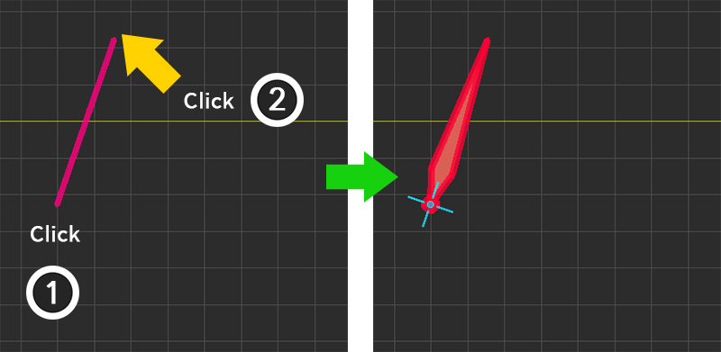
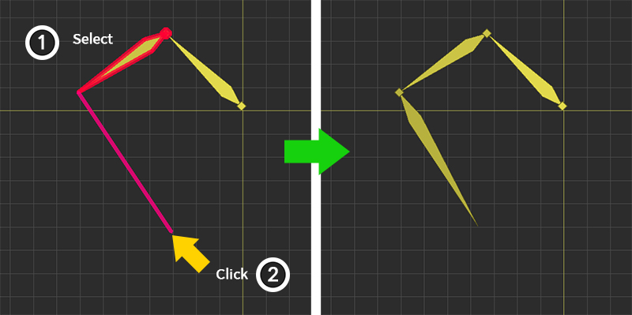
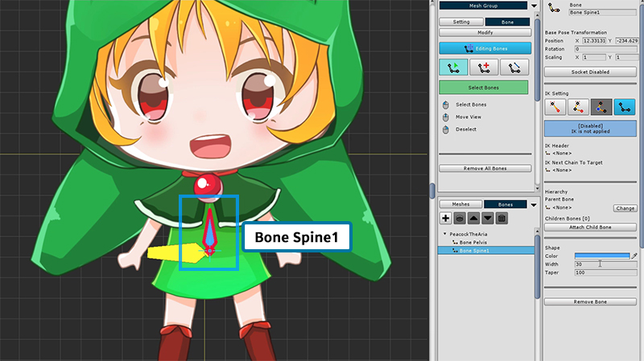
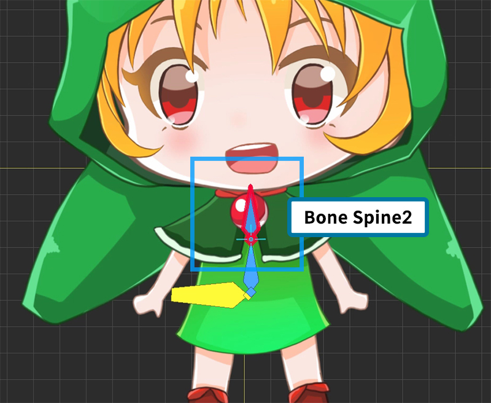

AnyPortrait > 入門ガイド > 2.4. 骨追加する
2.4. 骨追加する
1.0.0
骨のアニメーションを作成するために、骨を追加する方法を説明します。
AnyPortraitは「Bone IK（Inverse Kinematics）」をサポートし、「Bone Socket」をサポートしています。
詳細は、該当するページ（IKガイド、ソケットガイド）を参照してください。
このページは、基本的な骨組みを追加する方法と、次のチュートリアルを設定する方法を示します。

(1) 「Bone」メニューを選択します。
(2) 「Start Editing Bones」ボタンを押して、「骨編集モード」を有効にしてください。
(3) 骨の3つの編集ツールから「追加ツール」を選択します。

上記の画面は、骨編集モードのUIです。
1. 「骨編集(Editing Bones)」有効/無効ボタン : 骨編集モードのオン/オフを切り替えます。 オンになっている間だけ編集することができます。
2. 選択ツール : 骨を選択することができます。
3. 追加ツール : あなたは骨を追加することができます。選択された骨がある場合、自動的に 子骨として登録されます。 右クリック でチェックを外すことができます。 そして、再度 マウス右クリック をクリックすると、選択ツールに切り替わります。
4. 接続ツール : 二つの骨を接続して、「親 - 子の関係」にします。二番目に選択された骨は、親の骨になります。 右クリック でチェックを外すことができます。 そして、再度 マウス右クリック をクリックすると、選択ツールに切り替わります。
骨を追加する方法を学び、次のステップを進めます。

骨が選択されていない状態で、(1) 最初のクリックされた位置を開始点として、(2) 2番目のクリックされた位置を端点として、骨を作成します。

骨が選択されたら、(1) 選択された骨の終点を開始点として、(2) クリックされた終点で骨を作成します。
このとき、新しく作成されたボーンの名前と色は以前選択されたボーンと同様に設定され、形状(Shape)は同じになります。

あなたの体の中心である骨盤に骨を追加します。
骨盤の骨の方向は、それほど重要ではないので、後で簡単に選択できるように作られています。

(1) 「選択ツール」に変更して作成した骨を選択してください。
(2) 選択した骨の名前を「Bone Pelvis」に設定します。
(3) 骨の「色(Color)」と「形(Shape)」を変更する。
大きな骨の場合は大きなものを選択するのは簡単ですので、後で作業しやすくするためにサイズを設定することをお勧めします。

今、体の骨を作る。
最初に、新しい骨を作成し、それを 「Bone Spine1」という名前にします。

「Bone Spine1」を選択した状態で、第二の骨を作成します。
第2の骨の名前は自動的に 「Bone Spine2」と命名され、そのサイズまたは色は以前の骨と同様に設定されます。

頭の骨を追加します。(「Bone Head」)

また、キャラクターの耳の装飾に骨を追加します。

上記のように骨を設定します。
作成しているアニメーションと対象とする画像に応じて、さまざまなボーンを設定します。
次に、完成した骨をつなぎ合わせることです。
骨を正しく接続すると、実際の人のように自然に動くことができます。
まず、「骨盤(Pelvis)」を親(Root Parent Bone)に設定し、頭、手、足を端に接続するのが一般的です。

骨を接続するには、(1) 「接続ツール」を選択します。
(2) 身体の開始骨(「Bone Spine 1」)を選択し、(3) 骨盤(「Bone Pelvis」)を選択する。
このように骨盤の骨は親になり、体の骨は子供になります。
右クリック で次の選択を解除します。

同様に、脚を選択して骨盤に接続します。

頭と両腕は身体の最上部の骨(「Body Spine 2」)に接続されています。

フードのボーン(「Bone Ear L/R」, 「Bone HoodTail L/R」)をヘッド(「Bone Head」)にリンクします。

完成した骨を持つ階層です。
あなたがこのように同じように作成する必要はないので、人の骨が接続されている方法を考えながら自由に作成できます。
骨が見えない場合は？

画面の上部に骨を表示または非表示するボタンがあります。このボタンには、3つの状態があります。
1. ボタンがオフになっているときに、骨が見えません。
2. ボタンが点灯した場合、骨が満たされたままになります。
3. ボタンが点灯しているが、透明のアイコンが点灯している場合、骨は線でのみ表示されます。
参考 : このページは、本設定のおおよその概要を提供しています。
設定画面の構成は次のとおりです。
使い方は、関連ページを参照してください。

1. 名前 : 骨の名前を設定します。
2. Base Pose Transformation : 骨の位置、回転、サイズの値。
3. Socket : ベーキング後に骨を参照するには、ソケットを有効にします。
4. IK Setting : これは、骨のIK機能を設定する領域です。
5. Hierarchy : ここで親骨、子骨を選択することができます。
6. Shape : 色と形を設定します。 テーパ値が大きいほど、先端は先細になる。
7. Remove Remove Bone : 骨を削除します。 ダイアログボックスを選択して、すべての子を削除することもできます。
「色プリセット」と「針状（Needle Shape）」の骨
1.2.3

v1.2.3に追加された機能である「色プリセット」を利用すれば、骨の色をすばやく変更することができます。
6色のボタンをクリックすると、対応するカラーシリーズの色に変わります。
ボタンを押すたびに、他の色が指定されます。
プリセットからの色の範囲が適度に広いため、同じシリーズのボーンの色を類似させるのは簡単です。
v1.2.3から骨の外形を「矢印形（Arrowhead Shape）」と「針状（Needle Shape）」に変更することができます。 （関連ページ）
「針状」を選択した場合、「Width」と「Taper」属性は適用されません。